Candidate List 20261028Last night — ZTF: 1,234 passed basic cuts (31 young) · LSST: 0 passed basic cuts (0 young)Previous Day Next Day
Section 1: New Sources (age<1d) Section 2: Old (1-5d) sources observed last nightplaceholder
Section 1: New Afterglow/FBOT Cands Last Night (0)
Section 2: Older Sources Observed Last Night (8)
0. [ZTF] ZTF26accttyl (FBOT?) (TNS: AT 2017cgf) [Back to Top] [Share] [Trigger Swift] [Fritz Alert] [Fritz Source] [Lasair]RA, Dec: 127.28506, 48.4441 8h29m8.41s, 48d26m38.77sGalactic (l, b): 171.08515, 35.82722 ext(g-r) = 0.039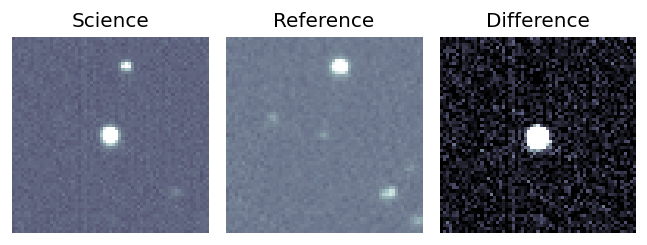
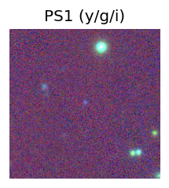
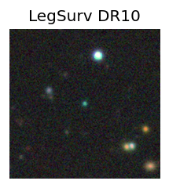
TESS: Sectors [20 47 60]
SDSS (<15 kpc):Found SDSS phot-z: z=0.29; peak abs mag = -25.63
PS1: 0 sources in 3 arcsec
LegacySurvey: 1 sources in 3 arcsec Closest: d = 0.07 arcsec, 190.7 deg (east of north) photoz=0.51 (68% bounds 0.36, 0.71), type=PSF peak abs mag (ext. corrected) = -27.11 (68% bounds -26.24, -27.98)
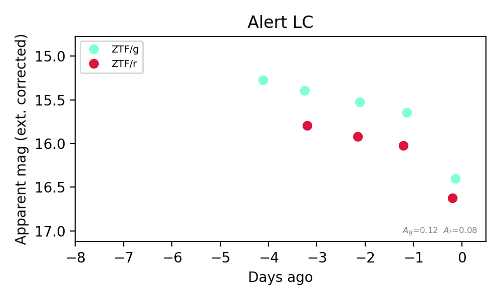
Extinction-corrected gr color:
From alerts: -0.22 +/- 0.05 mag
Rise Rate:
g: 1.03 mag/day
r: 0.79 mag/day
Fade Rate:
g: 0.23 mag/day
r: 0.26 mag/day
1. [ZTF] ZTF26acczljq (Afterglow?FBOT?) [Back to Top] [Share] [Trigger Swift] [Fritz Alert] [Fritz Source] [Lasair]RA, Dec: 305.12717, 6.02736 20h20m30.52s, 6d 1m38.49sGalactic (l, b): 49.01189, -16.70852 ext(g-r) = 0.193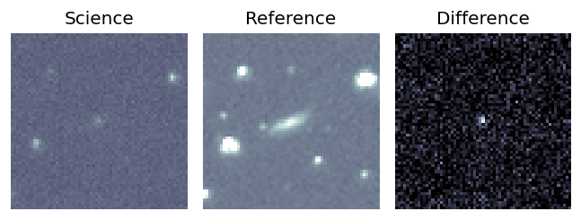
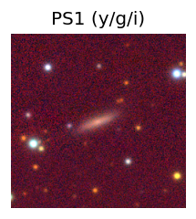

TESS: Sectors [54 81]
SDSS (<15 kpc):Found SDSS phot-z: z=0.11; peak abs mag = -20.56
PS1: 1 source in 3 arcsec Closest: d = 0.96 arcsec photoz=0.09+/-0.02 peak abs mag = -20.12
LegacySurvey: 0 sources in 3 arcsec
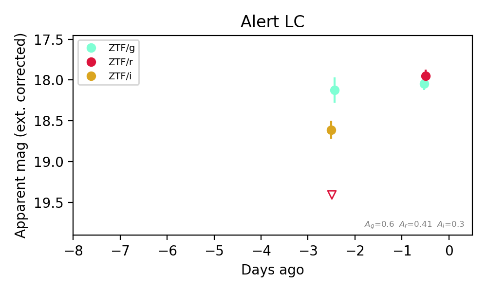
Extinction-corrected gr color:
From alerts: 0.09 +/- 0.11 mag
Extinction-corrected gi color:
From alerts: -0.49 +/- 0.19 mag
Extinction-corrected ri color:
From alerts: 0.79 +/- 99 mag
Consistent with synchrotron, g-r>0!
Rise Rate:
r: 0.72 mag/day
Fade Rate:
2. [ZTF] ZTF26accttql (Afterglow?) [Back to Top] [Share] [Trigger Swift] [Fritz Alert] [Fritz Source] [Lasair]RA, Dec: 113.32791, 41.82102 7h33m18.70s, 41d49m15.67sGalactic (l, b): 176.96893, 25.12285 ext(g-r) = 0.057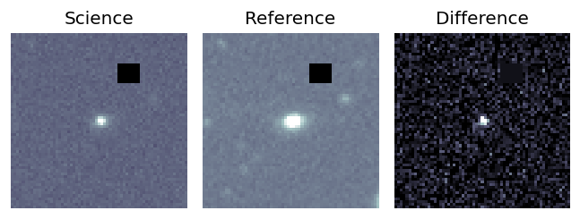
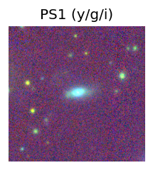
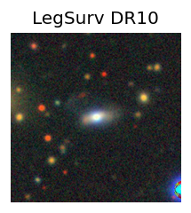
TESS: Sectors [20 47 60]
NED host (10 arcsec):Found WISEA J073318.69+414915.8 (G, 0.2″); NED spec-z: z=0.0425 [zflag SLS]; peak abs mag = -17.35
PS1: 0 sources in 3 arcsec
LegacySurvey: 1 sources in 3 arcsec Closest: d = 0.26 arcsec, 286.9 deg (east of north) photoz=0.04 (68% bounds 0.03, 0.06), type=SER peak abs mag (ext. corrected) = -17.39 (68% bounds -16.78, -17.96)
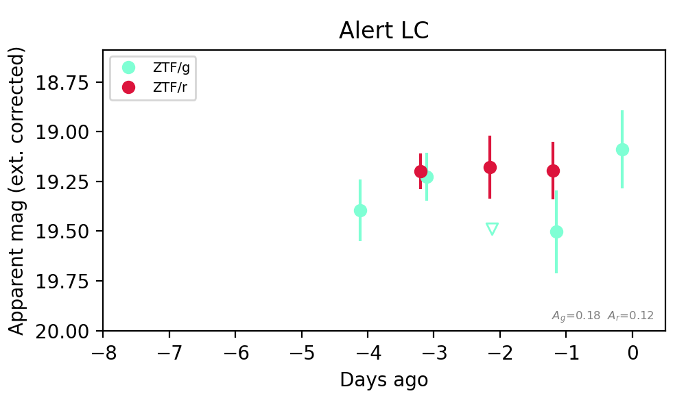
Extinction-corrected gr color:
From alerts: 0.31 +/- 0.25 mag
Consistent with synchrotron, g-r>0!
Rise Rate:
g: 0.25 mag/day
r: 0.22 mag/day
Fade Rate:
g: 0.26 mag/day
3. [ZTF] ZTF26accuvdb (FBOT?) [Back to Top] [Share] [Trigger Swift] [Fritz Alert] [Fritz Source] [Lasair]RA, Dec: 72.52968, 78.35425 4h50m7.12s, 78d21m15.29sGalactic (l, b): 133.67689, 20.84717 ext(g-r) = 0.133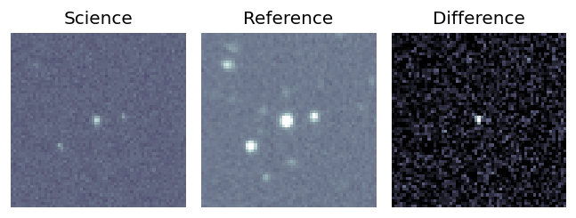
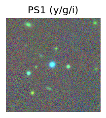
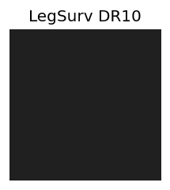
TESS: Sectors [19 25 26 52 53 59 60 73 79 86]
PS1: 1 source in 3 arcsec Closest: d = 0.97 arcsec photoz=0.11+/-0.05 peak abs mag = -20.34
LegacySurvey: 0 sources in 3 arcsec
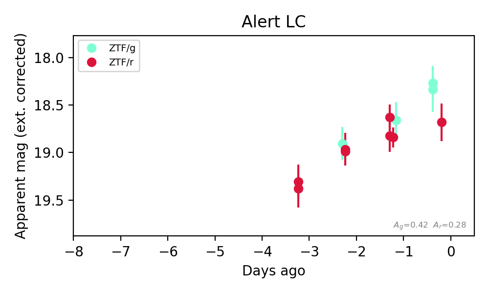
Extinction-corrected gr color:
From alerts: -0.39 +/- 0.24 mag
Rise Rate:
g: 0.32 mag/day
r: 0.24 mag/day
Fade Rate:
4. [ZTF] ZTF26acczayh (FBOT?) [Back to Top] [Share] [Trigger Swift] [Fritz Alert] [Fritz Source] [Lasair]RA, Dec: 319.60368, 61.18067 21h18m24.88s, 61d10m50.42sGalactic (l, b): 99.96028, 8.21281 ext(g-r) = 0.684Coincident trigger: Fermi/GBM GRB261024683 (r=1.6 deg, sep 2.3 deg = 1.44 r; 1.48 d before first detection)Trigger time(s) marked on the light curve; error circles in the localization panel.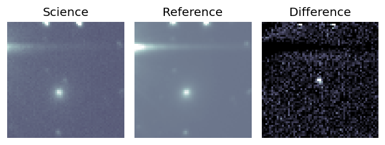
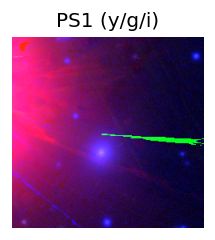
TESS: Sectors [ 16 17 24 56 57 76 77 83 84 121]
PS1: 1 source in 3 arcsec Closest: d = 4.57 arcsec photoz=0.13+/-0.00 peak abs mag = -21.96
LegacySurvey: 0 sources in 3 arcsec
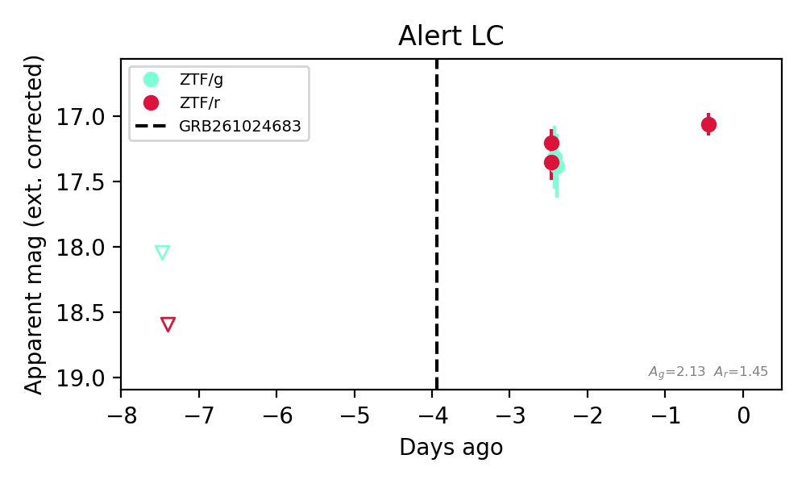
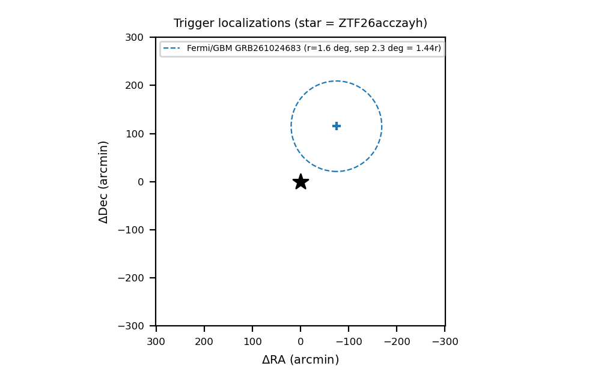
Extinction-corrected gr color:
From alerts: 0.09 +/- 0.19 mag
Consistent with synchrotron, g-r>0!
Rise Rate:
g: 0.14 mag/day
r: 0.28 mag/day
Fade Rate:
5. [ZTF] ZTF26acdhbrg (FBOT?) [Back to Top] [Share] [Trigger Swift] [Fritz Alert] [Fritz Source] [Lasair]RA, Dec: 331.44215, 37.0052 22h 5m46.12s, 37d 0m18.72sGalactic (l, b): 89.77838, -14.98294 ext(g-r) = 0.158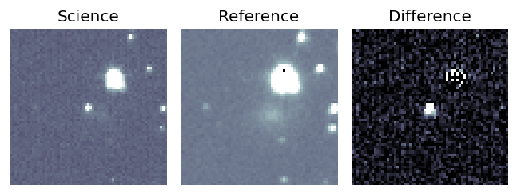
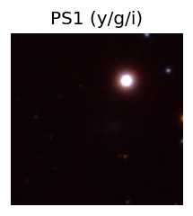
TESS: Sectors [ 15 16 56 83 121]
PS1: 1 source in 3 arcsec Closest: d = 2.54 arcsec photoz=0.24+/-0.23 peak abs mag = -23.33
LegacySurvey: 0 sources in 3 arcsec
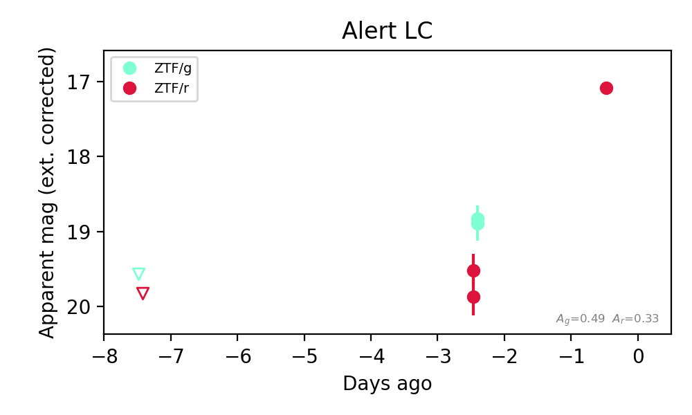
Extinction-corrected gr color:
From alerts: -0.82 +/- 0.21 mag
Rise Rate:
g: 0.15 mag/day
r: 1.3 mag/day
Fade Rate:
6. [ZTF] ZTF26acdhjsl (Afterglow?FBOT?) [Back to Top] [Share] [Trigger Swift] [Fritz Alert] [Fritz Source] [Lasair]RA, Dec: 307.49798, 56.85089 20h29m59.52s, 56d51m3.20sGalactic (l, b): 92.58836, 10.30492 ext(g-r) = 0.492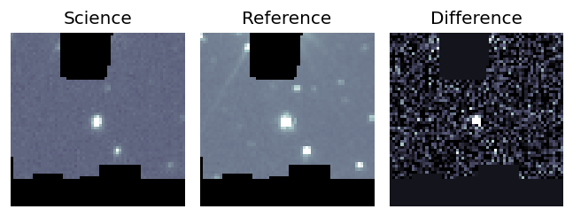
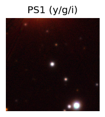
TESS: Sectors [ 15 16 17 41 55 56 57 75 76 77 82 83 84 121]
PS1: 1 source in 3 arcsec Closest: d = 0.60 arcsec photoz=0.08+/-0.00 peak abs mag = -20.12
LegacySurvey: 0 sources in 3 arcsec
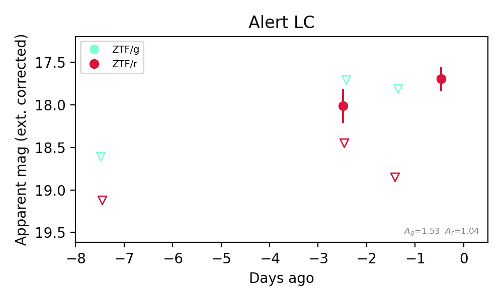
Extinction-corrected gr color:
From alerts: -0.31 +/- 99 mag
Rise Rate:
r: 1.21 mag/day
Fade Rate:
r: 20.44 mag/day
7. [ZTF] ZTF26acdixdx (Afterglow?) [Back to Top] [Share] [Trigger Swift] [Fritz Alert] [Fritz Source] [Lasair]RA, Dec: 116.53033, 63.53674 7h46m7.28s, 63d32m12.25sGalactic (l, b): 152.97385, 30.12843 ext(g-r) = 0.046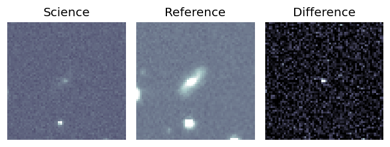
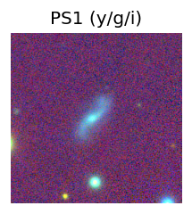
TESS: Sectors [20 60 74]
PS1: 0 sources in 3 arcsec
LegacySurvey: 1 sources in 3 arcsec Closest: d = 1.66 arcsec, 106.7 deg (east of north) photoz=0.03 (68% bounds 0.03, 0.04), type=SER peak abs mag (ext. corrected) = -16.98 (68% bounds -16.38, -17.61)
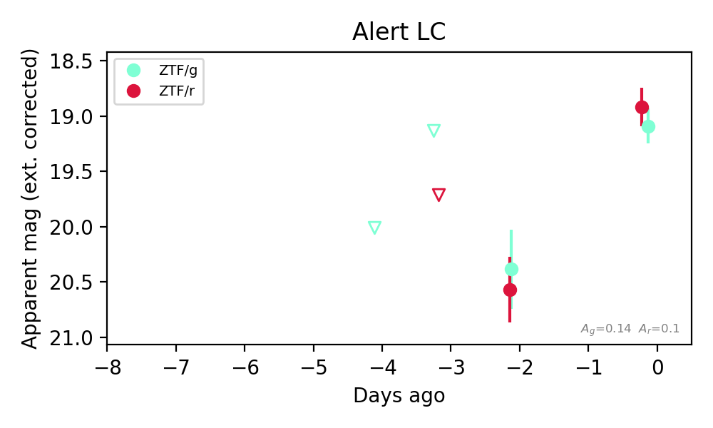
Extinction-corrected gr color:
From alerts: 0.17 +/- 0.24 mag
Consistent with synchrotron, g-r>0!
Rise Rate:
g: 0.65 mag/day
r: 0.86 mag/day
Fade Rate: